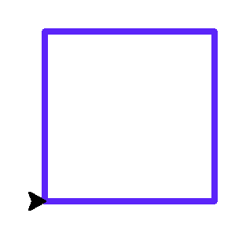
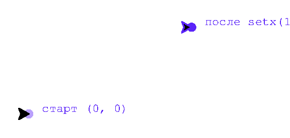

Глава 6 · Рисуем классные вещи с помощью Turtle
goto() и координатная панель
Тот же квадрат, что и раньше, — но на этот раз через прямое указание координат каждого угла.
Вернёмся к квадрату из раздела про мини-проекты — на этот раз нарисуем его без единого
поворота, задавая напрямую четыре угловые точки командой goto().
Абсолютное перемещение: goto(x, y)
kvadrat_goto.py
import turtle
screen = turtle.Screen()
screen.setup(width=400, height=400)
artist = turtle.Turtle()
artist.pensize(3)
artist.pencolor("#5B24F9")
artist.goto(100, 0)
artist.goto(100, 100)
artist.goto(0, 100)
artist.goto(0, 0)
screen.exitonclick()Результат выполнения

kvadrat_goto_kod.py
artist.goto(100, 0)
artist.goto(100, 100)
artist.goto(0, 100)
artist.goto(0, 0)Два способа — один результат
forward() + right() описывают движение относительно черепашки («проехать, повернуть»); goto() описывает движение относительно экрана («окажись в этой точке»). goto() удобен, когда координаты фигуры уже известны заранее.Навигационная панель черепашки
Кроме goto(), у черепашки есть ещё несколько команд для работы
с координатами напрямую:
| Команда | Что делает |
|---|---|
position() (или pos()) | вернуть текущие координаты (x, y) |
xcor() | вернуть только координату x |
ycor() | вернуть только координату y |
setx(x) | переместиться, изменив только x |
sety(y) | переместиться, изменив только y |
home() | вернуться в (0, 0) с курсом 0° |
navigacionnaya_panel.py
import turtle
screen = turtle.Screen()
screen.setup(width=480, height=360)
artist = turtle.Turtle()
artist.pensize(3)
artist.pencolor("#5B24F9")
artist.penup()
artist.dot(8, "#B9A0FC")
artist.write(" старт (0, 0)", font=("Arial", 11, "normal"))
artist.setx(150)
artist.sety(80)
artist.dot(8, "#5B24F9")
artist.write(" после setx(150), sety(80)", font=("Arial", 11, "normal"))
screen.exitonclick()Результат выполнения

navigaciya_kod.py
print(artist.position()) # текущие координаты
artist.setx(150)
artist.sety(80)
print(artist.position()) # координаты изменились по одной оси за разПрактика: рисуем фигуры через координаты
Модуль turtle открывает нативное окно Python — выполните локально в VS Code, PyCharm или Jupyter
Практика выполняется локально